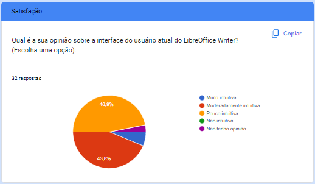

Questionário
O questionário foi utilizado principalmente devido sua simplicidade. Ele contém perguntas abertas e fechadas que foram aplicadas durante a fase inicial da elicitação de requisitos. Com ele, pretendemos coletar o máximo de requisitos possíveis de diferentes pessoas que podem estar em lugares distintos.
Vantagens do uso de questionário
- Rápida obtenção de dados quantitativos e qualitativos
- Técnica de baixo custeamento
- Obtenção de dados de forma fácil, simultâneamente e numerosas
- Menor tempo de elaboração
- Quando as partes interessada não possuem uma estalagem fixa
- Demanda menor tempo dos respondentes quando comparada a uma entrevista
- Quando o público alvo encontra-se disperso geograficamente
- Quando apresenta uma amostra significativa, é possível inferir uma opinião de toda uma população.
Desvantagens do uso de questionário
- A baixa taxa de resposta do questionário implicara em um resultado estatisticamente significativo.
- Falhas na elaboração do questionário pode levar a respostas em branco ou não incorretas, gerando um enviesamento da pesquisa podendo se propagar para elicitação de requisitos.
- Maior demanda de tempo caso as escolhas das respostas forem ilimitadas.
Aplicação do questionário
O questionário foi aplicado utilizando a plataforma online Google Forms e ficou aberto durante um período de 3 dias.
A página inicial do questionário indica uma explicação e o termo de uso para participar da pesquisa.
Abaixo podemos ver a relação gráfica das respostas obtidas através das 47 respostas ao questionário.
Informações Demográficas
Figura 1: Abertura do Questionário

Figura 2

Figura 3

Figura 4

Figura 5

Figura 6

Informações sobre o uso do sistema
Figura 7

Figura 8

Figura 9

Figura 10

Figura 11

Figura 12

Figura 13

Figura 14

Figura 15
Figura 16

Satisfação do usuário
Figura 17

Motivo de não usar o LibreOffice (caso marcasse a opção no início do questionário)
Figura 17

Referência Bibliográfica
GNACIO, Rafael C. Guia Facetado de Técnicas de Elicitação de Requisitos. Universidade Federal de Santa Catarina. 2018. Disponível em: https://retraining.inf.ufsc.br/guia/app/classificacoes/tecnicas-de-elicitacao-de-requisitos/entidades/tecnicas-de-elicitacao-de-requisitos-questionarios
Histórico de Versão
| Versão | Data | Descrição | Autor(es) | Revisor(es) |
|---|---|---|---|---|
1.0 |
01/10/2023 | Formulação das perguntas | Ana Letícia | Todos |
1.2 |
01/10/2023 | Criação do questionário | Ana Letícia | Ana Luiza |
1.3 |
03/10/2023 | Criação do documento | Ana Letícia | Ana Luiza |
1.4 |
01/10/2023 | Inserção dos gráficos | Ana Letícia | Ana Luiza |